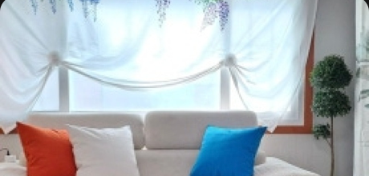

DAY 1
도착 & 첫째 날 숙소
이동 후 숙소에서 여장을 풀고 첫째 날 밤을 보내요.
🏠 숙소

남해는, 지금
1인실 기준 17만원 / 박
4명이 나눠서 결제 (기아 언니 포함 1일차만)
네이버지도에서 보기 →
DAY 2
말발굽길 + 고사리밭길 일부
적량마을에서 출발해 가인리까지, 총 약 17.5km를 걸어요.
🚶 도보 코스 ② — 4코스 고사리밭길 (일부, 가인리까지)
DAY 3
동대만길
창선대교 단항검문소에서 출발해 창선면행정복지센터까지 15km를 걸어요.
🚕 이동
🚕
창선면 → 1일차 숙소
도보 코스 완주 후 창선면에서 택시로 약 10분 이동해 첫째 날 숙소로 복귀합니다.
💰 숙소비 정산
1일차 · 남해는, 지금
기아 언니 포함 4인 분담
17만원
🎒 준비물 메모
- 2일차 숙소 앞바다에서 수영 가능 — 수영복 & 스노클 챙기기
- 연휴 기간이라 숙소 예약이 빨리 마감되니 일정 변동 시 미리 공유하기
- 가방은 최대한 가볍게, 그 대신 체력은 미리 만들어두기 ㅋㅋ
- 고사리밭길 사전예약 필요 여부 다시 한 번 확인